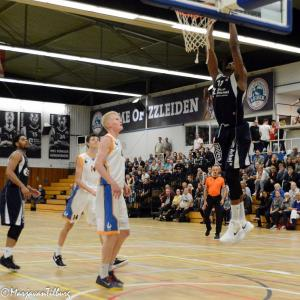

ZZ Leiden te sterk voor Den Helder
LEIDEN, 20 september 2017 - Zorg en Zekerheid Leiden heeft de eerste oefenwedstrijd in de eigen Vijf Meihal in winst omgezet. Den Helder Suns, de debutant in de DBL, keek bij rust al tegen een 49-26 achterstand aan. BIj het laatste fluitsignaal was het 100-63.
Beide partijen kwamen niet compleet aan de start. Zorg en Zekerheid Leiden moest het nog stellen zonder Clayton Vette. Bij Den Helder Suns ontbraken Tjoe de Paula en de Luxemburgse international Alex Laurent. Bij de thuisploeg startten Sergio de Randamie, Jessey Voorn, Worthy de Jong, Mohamed Kherrazi en Carrington Love. Peter van Noord, de Helderse coach, stuurde Lavonte Dority, Tom Koopman, Boyd van der Vuurst de Vries, Dyon Halman en Quinterian McConico als startend vijftal het veld op.
Binnen twee minuten had de Leidse ploeg een 11-0 voorsprong genomen, onder andere door driepunters van Voorn (twee stuks) en Love (één). Van Noord greep meteen naar de time-out. Even leek Den Helder op te leven na een dunk van Quinterian McConico, maar Kherrazi betaalde hem aan de andere kant met gelijke munt terug. Waar bij Zorg en Zekerheid Leiden Love leuke dingen liet zien, viel aan de zijde van Den Helder het spel van Nick Thran op: snel en gedurfd spel en beslist niet onder de indruk van de grote namen aan de andere kant.
Zorg en Zekerheid Leiden hield het tempo hoog. Via 28-13 na tien minuten werd het 49-26 bij de rust. De Leidse ploeg had al acht driepunters genoteerd. Aan Helderse zijde produceerden Dority en Mickey Kolhorn allebei een bommetje. Na de pauze bemoeide De Jong zich wat meer met het spel. Voor rust stond de international al snel op drie fouten en vlak na de rust stond de teller op vier. Het weerhield hem er niet van om na de pauze vijf driepunters te benutten en een achterwaartse dunk na een steal te demonstreren. Zijn laatste twee driepunters waren precies genoeg om de 100 op het bord te schieten.
Na een derde kwart van 30-10 bleef Den Helder Suns toch werken voor een beter resultaat. Dority trok in het vierde kwart nog even nadrukkelijk aan de bel door negen punten aan zijn totaal toe te voegen. Bij de Leidse jonkies liet Rens Butter zich nadrukkelijk gelden. De jonge spelverdeler schroomde niet om de basket aan te vallen en dat leidde soms tot spectaculaire drives. Butter was de zesde Leidse speler in de dubbele cijfers met 10 punten.
Scores Zorg en Zekerheid Leiden: Worthy de Jong 24, Jessey Voorn 17, Carrington Love 15, Mohamed Kherrazi 12, Floris Versteeg 12, Rens Butter 10, Sergio de Randamie 6 en Marijn Ververs 4.
Scores Den Helder Suns: Lavonte Dority 16, Quinterian McConico 15, Mickey Kolhorn 8, Nick Thran 7, Dyon Halman 6, Tom Koopman 6 en Boyd van der Vuurst de Vries 5.
< Naar het vorige artikelNaar het volgende artikel >